Smart Rail — Lottery-Based Railway Booking System
Complete Application Flow Report
Section A: User Flow
The user flow covers the complete journey from authentication to ticket booking through the lottery-based system.
Step 1: Landing Page (Sign In)
When an unauthenticated user visits the application, they see the Smart Rail landing page with a "Continue with Google" button.
Key UI Elements:
- Hero: "Book smarter journeys with a cleaner, faster rail experience."
- Feature badges: Live search flow, Lottery status tracking, Simple ticket management
- Google OAuth sign-in card
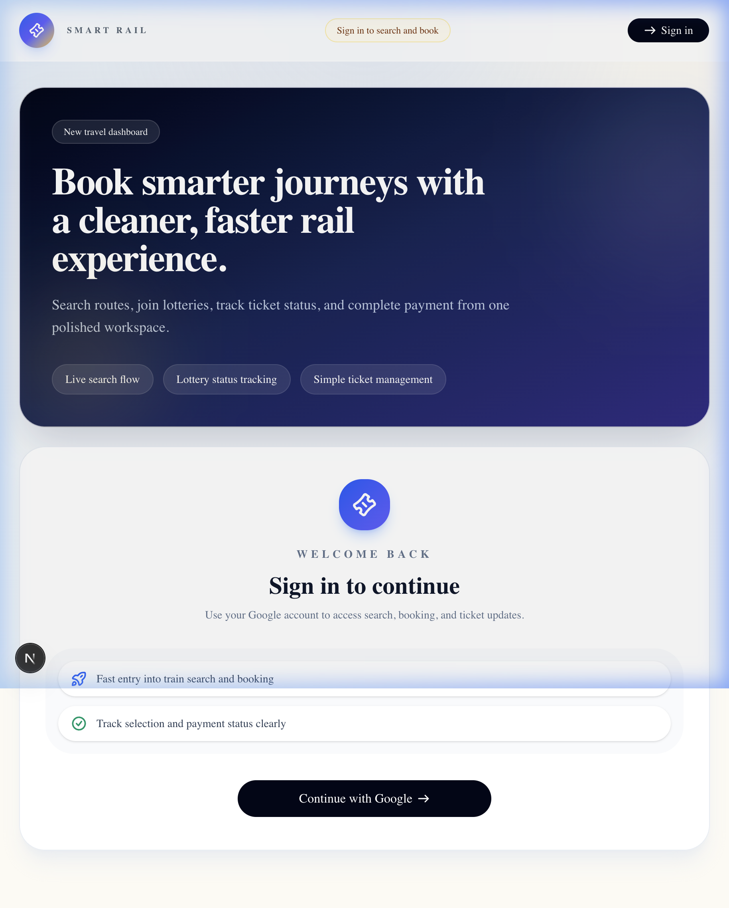
Step 2: Google OAuth Authentication
Clicking "Continue with Google" redirects to Google's OAuth consent screen via Supabase.
Key UI Elements:
- Google account picker with available accounts
- Redirect via Supabase OAuth (
tqsiadlcbtpyrwjydgfs.supabase.co)
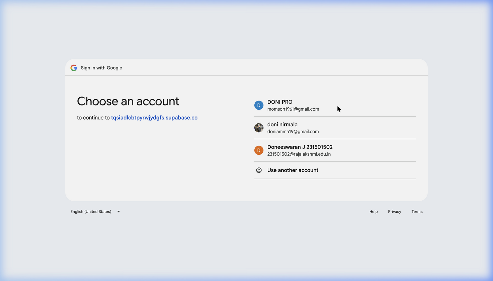
Step 3: Train Search Page
After login, the user lands on the Search page. The navbar shows the authenticated user's profile and role.
Key UI Elements:
- From and To station input fields
- Date picker (auto-filled with today's date)
- "Search Trains →" button
- Navbar: Search, My Tickets, profile avatar
- Admin users see additional: Add Train, Publish Results, Passengers
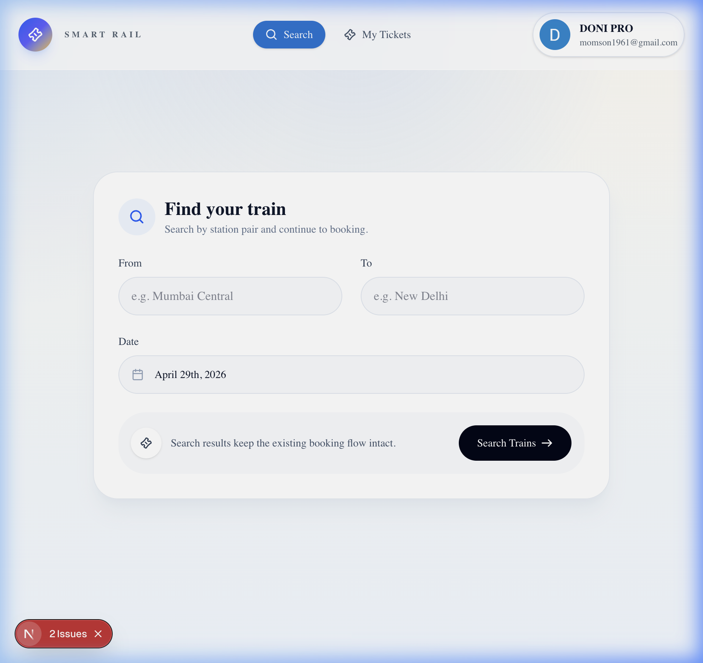
Step 4: Train Results — List of Available Trains
After searching (e.g., Mumbai Central → New Delhi), matching trains are displayed with full details.
Key UI Elements:
- Train card: Name, Number, TATKAL badge
- Schedule: Departure/Arrival times, Duration
- Fare classes: Economy (₹1500), Business (₹2500), First Class (₹3500)
- Seat availability indicators (green dots)
- "Book" button to enter the lottery
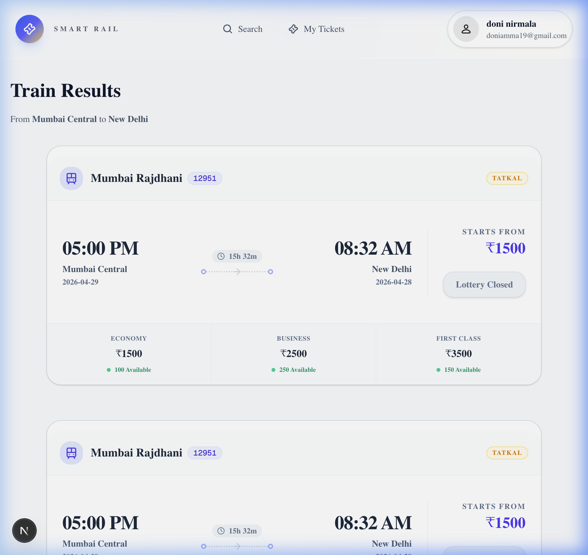
Step 5: Booking Window — Lottery Countdown
When clicking "Book", the booking page shows a countdown timer if the lottery window hasn't opened yet.
Key UI Elements:
- "Booking Window Opens Soon" message with animated hourglass icon
- Countdown timer — Hours : Minutes : Seconds
- The lottery enforces a 5-minute submission window to prevent bot advantages
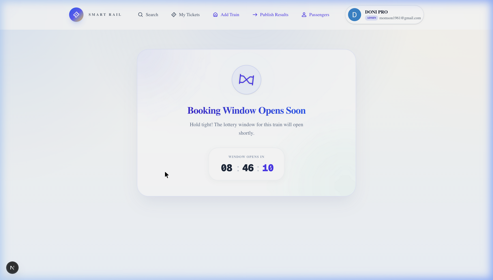
Step 6: Lottery Entry & Payment
Once the window opens, the user:
- Selects preferred travel class (Economy / Business / First)
- Enters Aadhaar verification (12-digit identity check)
- Submits the lottery entry
- If selected by the weighted algorithm → Razorpay payment
- Upon payment → Ticket confirmed
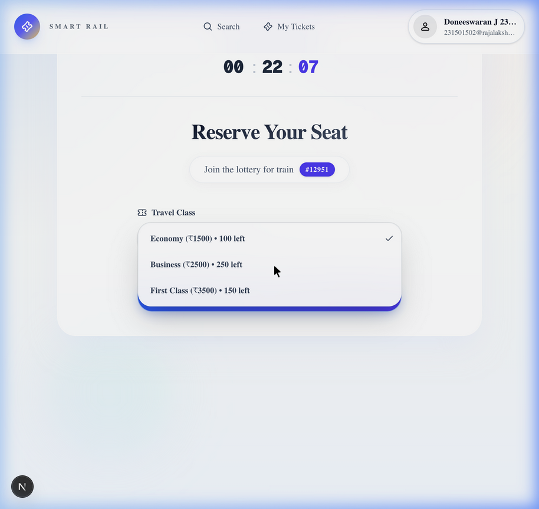
[!NOTE]
The lottery uses a weighted priority scoring algorithm that rewards users with previous failures, ensuring fairness. Submission timing is tracked to detect bots.
Step 7: My Tickets
Users view their bookings on the My Tickets page with booking count and status.
Key UI Elements:
- "Ticket dashboard" badge
- BOOKINGS counter (top right)
- Ticket list with status and payment confirmation
- "No tickets found yet" message when empty
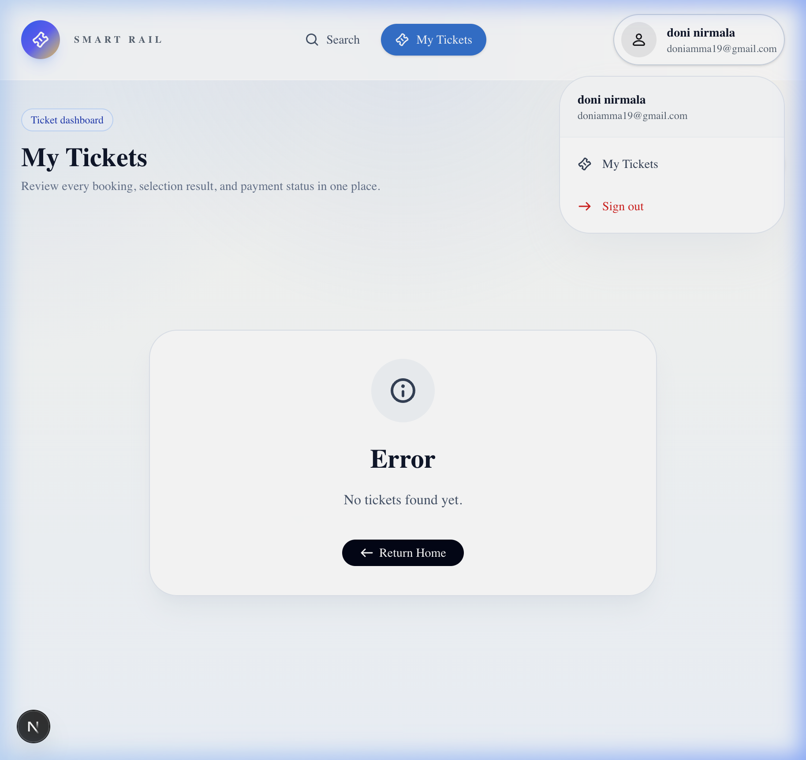
Section B: Admin Flow
Admin users (identified by ADMIN_EMAIL in the backend) have additional management pages visible in the navbar with an ADMIN badge.
Step 8: Admin — Add New Train (Top Section)
Admins create new routes through the "Add Train" page. The form is organized into clear sections.
Key UI Elements:
- Train Identity: Train Number, Train Name
- Route & Stations: From Station, To Station
- Schedule: Departure/Arrival dates and times, Duration
- Tatkal Quota: Toggle for lottery booking + Opening/Closing windows
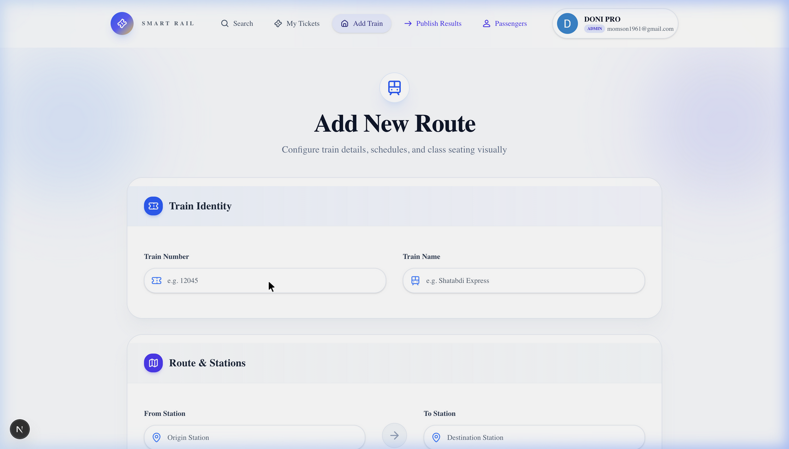
Step 9: Admin — Add New Train (Pricing & Submit)
The bottom section of the Add Train form covers class configuration and submission.
Key UI Elements:
- Class Configuration: Economy, Business, First — Available Seats & Fare Per Seat (₹)
- "Publish New Train" button (full-width, prominent)
- DEV PREVIEW panel showing the JSON payload being sent
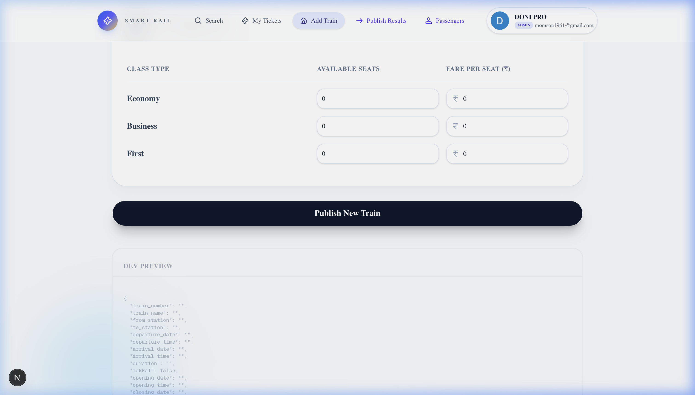
Step 10: Admin — Publish Lottery Results
The Publish Results page lists all trains with their schedules and a "Publish" button to run the lottery algorithm.
Key UI Elements:
- List of all trains with TATKAL badge
- Train details: Name, Number, Schedule, Route
- "Publish" button per train to trigger the lottery selection
- Trains shown: Mumbai Rajdhani 12951, Mumbai Rajdhani 12952, Shatabdi Express 12027
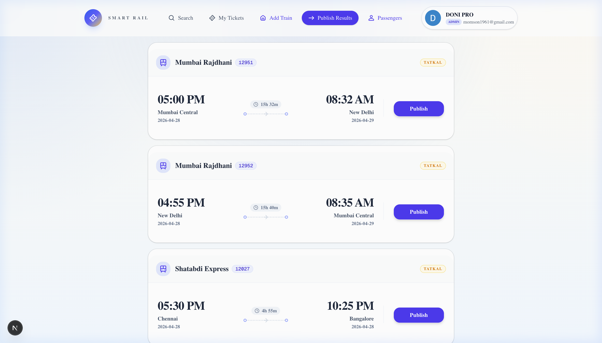
Step 11: Admin — Passenger List
The Passengers page lets admins view selected passengers for any published lottery journey.
Key UI Elements:
- "Passenger List" header with ADMIN badge
- Filter by Date picker
- Select Journey dropdown for published journeys
- Filtered passenger list with booking status and priority scores
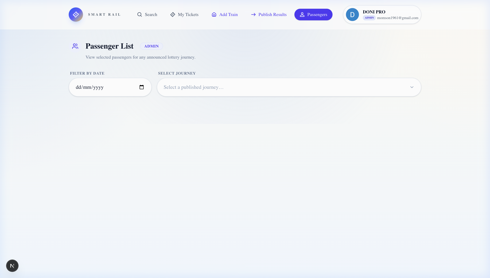
Section C: Design Thinking Process
The Fair Tatkal project was developed using the Stanford Design Thinking methodology to address the systematic exclusion of users in the current Tatkal booking system.
Design Thinking Infographic
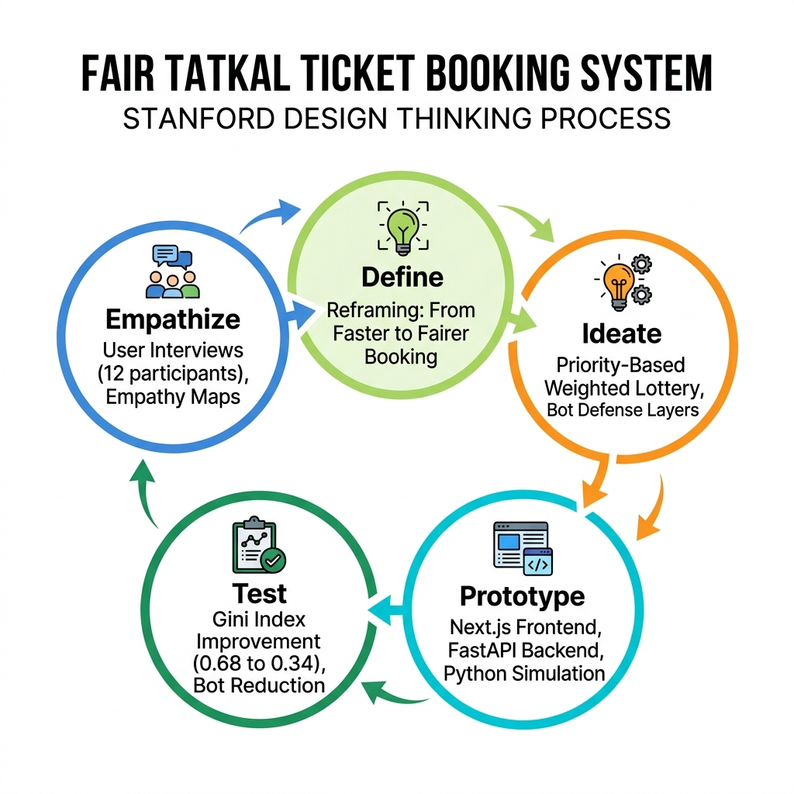
Process Breakdown
- Empathize: Conducted 12 structured interviews with diverse demographics (rural workers, students, urban professionals). Identified that speed is the primary mechanism of exclusion.
- Define: Reframed the problem from "How to make booking faster?" to "How to make booking fairer?". Developed the SCOPES framework.
- Ideate: Brainstormed alternative allocation mechanisms. Selected the Priority-Based Weighted Lottery for its transparency and fairness.
- Prototype: Built an interactive 9-screen Next.js application and a Python simulation model to test the lottery algorithm at scale (10,000 users).
- Test: Validated results using the Gini Coefficient. Achieved a 50% improvement in distributional fairness and a 633% increase in rural user success rates.
System Architecture
Client Connection
💻 📱 👁️
Using Aadhaar for secure authentication | Fair Tatkal Registration with 5KB Lightweight Packet
Lottery Entry Flow
Fair Tatkal Module (Client-Side)
- Priority Score Calculation
- Aadhaar Identity Hash (SHA-256)
- Bot Detection Pre-screening
Plain Data to End-to-End Encrypted Submission
👤User 1
➡️ 📄🔒 ➡️
End-End Encryption
👤User 2
➡️ 📄🔒 ➡️
End-End Encryption
👤User 3
➡️ 📄🔒 ➡️
End-End Encryption
Public Server
Express API Server 🖥️
Application Logic (Lottery Entry)
Web Server
Database PostgreSQL 🐘
PUBLIC SERVER
Firewall & Core
Python Lottery Engine 🐍
Services for Bot Defense & Execution
ML Isolation Forest Bot Detection 🤖
PRIVATE CORE SERV
Admin Workflow
flowchart TD
A1["Admin Login (ADMIN badge)"] --> B1["Add New Train"]
B1 --> C1["Configure Identity, Route, Schedule"]
C1 --> D1["Set Tatkal Quota & Window"]
D1 --> E1["Set Class Pricing (Economy/Business/First)"]
E1 --> F1["Publish New Train"]
F1 --> G1["Passengers Enter Lottery"]
G1 --> H1["Booking Window Closes"]
H1 --> I1["Publish Results Page"]
I1 --> J1["Click Publish → Run Lottery Algorithm"]
J1 --> K1["View Passenger List"]
K1 --> L1["Audit Winners & Priority Scores"]
Technology Stack
| Layer | Technology |
|-------|-----------|
| Frontend | Next.js 15 (App Router) |
| Backend | FastAPI (Python) |
| Database | SQLite (SQLModel ORM) |
| Authentication | Supabase + Google OAuth |
| Payment | Razorpay Integration |
| Anti-Bot | Aadhaar verification, Timing analysis, Priority scoring |
Performance Metrics
The following infographic compares the performance and fairness metrics of the Fair Tatkal system against the current first-come-first-served (FCFS) mechanism.
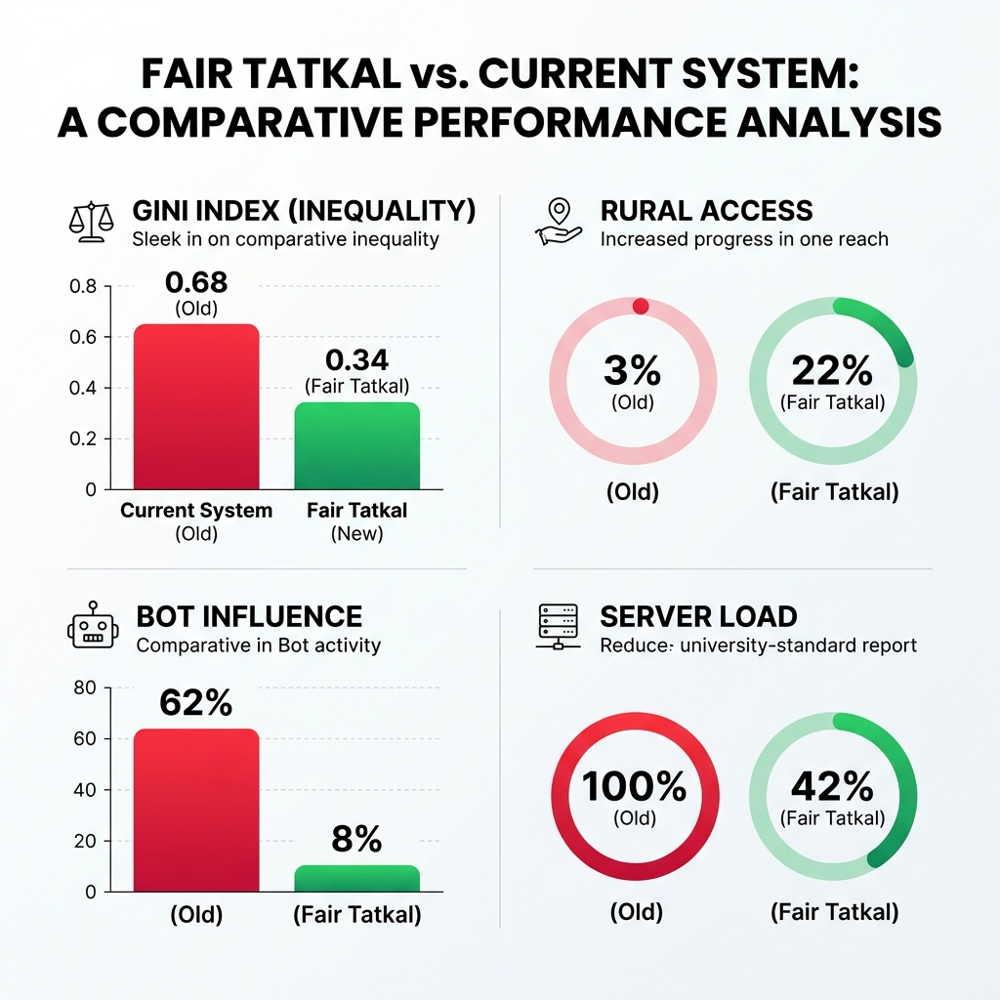
Feedback-Driven Refinements
Based on peer testing, empathy findings, and simulation results, the Fair Tatkal prototype was refined to better support low-connectivity users, elderly passengers, and first-time digital users.
1. Voice‑Assisted and Multi‑Language Guidance & 2. Enhanced 2G‑Safe Interaction Pattern
To address low-literacy users and low-connectivity environments, the design now includes voice-guided prompts and an offline-safe request queue visualization with a minimal 4.2 KB payload display.
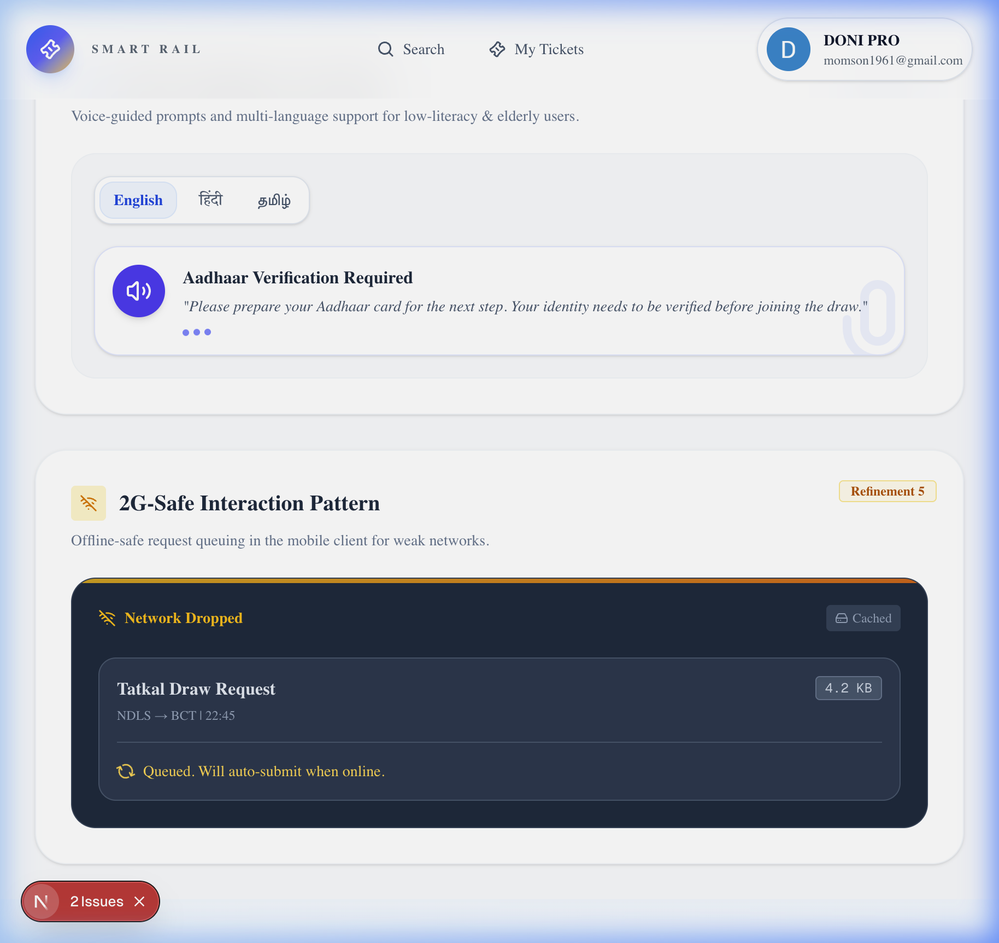
3. Clearer Failure Handling & Recovery Path
Introduced an empathetic error state for payment failures that explicitly confirms the user's priority score is protected, along with a countdown timer for the retry window.
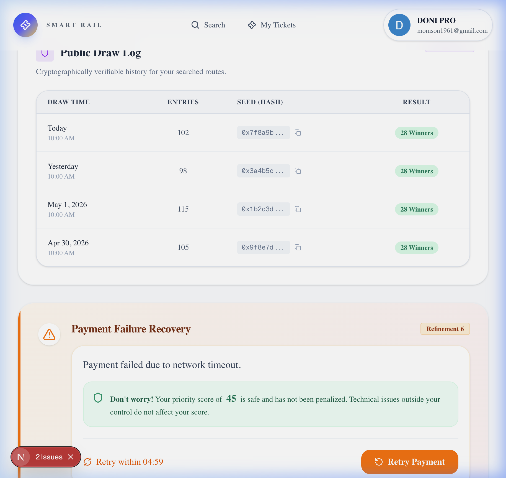
Section C: Conclusion & Future Scope
The Smart Rail system successfully addresses the "Tatkal" booking problem by replacing the first-come-first-served race with a fair, lottery-based selection process. By utilizing weighted priority scores and Aadhaar verification, the system eliminates bot advantages and ensures that genuine travelers have a high chance of securing a ticket over time.
Key Achievements:
- Fairness: Weighted algorithm rewards users who have faced previous booking failures.
- Security: Integrated Aadhaar verification and timing analysis to prevent automated scripts.
- Scalability: Built on a modern Next.js and FastAPI stack, capable of handling high traffic during booking windows.
- Transparency: Admin dashboard provides clear visibility into passenger lists and lottery results.
Future Roadmap:
- Integration with live IRCTC APIs for real-time train status.
- Mobile app development for easier access on the go.
- Enhanced analytics for predicting booking success rates based on historic data.
End of Report — Generated for Smart Rail Project Submission